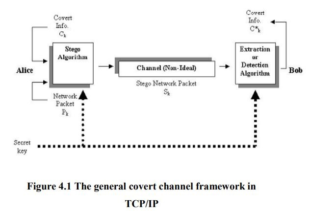
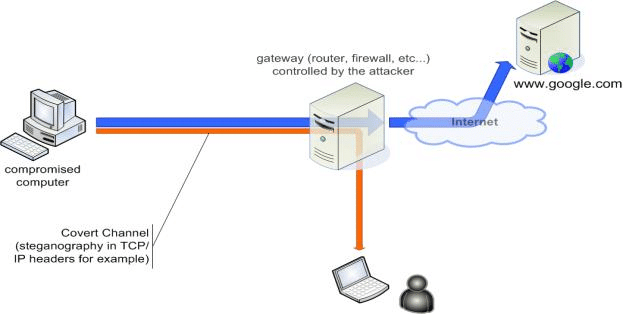

Covert Channels
Posted by Weisheng Zhong
Historically, the expression “covert channel” has broadly encompassed all communications that are hidden and communicate stealthily between endpoints. The goal of such a channel is not necessarily to obscure the data flowing through the channel, but to obscure the very fact that a channel exists. Often this data may be passed in plain sight of possible observers, but if properly engineered, may remain nearly impossible to detect. Covert channels represent a pure example of security through obscurity. mechanism for sending information without the knowledge of the network administrator or other users.
The term ‘covert channel’, when applied to computer networks, describes a type of computer attack that allows the communication of information by transferring objects through existing information channels or networks using the structure of the existing medium to convey the data in small parts. This makes conveyance through a covert channel virtually undetectable by administrators or users. Covert channels have been used to steal data from highly secure systems.
In this blog post we’ll firstly present two main types of convert channels. Additionally, we'll introduce several covert channel examples. Finally we discuss the difference between a covert channel and a side-channel.
Types of Convert Channels
1. Storage Channels: Covert storage channels are methods of communication that “include all vehicles that would allow the direct or indirect writing of a storage location by one process and the direct or indirect reading of it by another”. In other words, one process writes to a shared resource, while another process reads from it. Storage channels can be used between processes within a single computer or between multiple computers across a network. A good example of a storage channel is a printing queue. The process with higher security privileges, the sending process, either fills up the printer queue to signal a 1 or leaves it as it is to signal a 0. The process with lower security privileges, the receiving process, polls the printer queue to see whether or not it is full and determines the value accordingly.
2. Timing Channels: Covert timing channels are methods of communication that “include all vehicles that would allow one process to signal information to another process by modulating its own use of system resources in such a way that the change in response time observed by the second process would provide information”. In other words, it is essentially any method that uses a clock or measurement of time to signal the value being sent over channel. Similarly to storage channels, timing channels can exist both in a single-computer setting and a network setting. An example of a timing channel can be found in a movable head I/O device, such as a hard disk. One process with higher security privileges, the sending process, has access to the entire device while another process with lower security privileges, the receiving process, only has access to a small portion of the device. Requests to the device are processed serially. To signal a 1, the sending process makes a read request far away from the section that the receiving process has access to. To signal a 0, it does nothing. The receiving process makes a read request within its own section and uses the time it takes for the head to travel to the section and finish the read request to determine the value accordingly.

Examples
1. Printing Service Covert Channel: A trusted line printer service correctly tags each submitted job with the MAC label of the requesting process and maintains that label with the queued jobs for use in eventual printing. Jobs with relatively long names are allowed. A status program allows the user to see all of the jobs that are queued for the user, including the user-assigned job name, regardless of the label of the job. This can be used as a covert channel since the sender process can then create jobs whose name contains data to be covertly passed to receivers that operate on behalf of the same user. This channel is closed by allowing the user to only view jobs that are dominated by the user's current MAC label. This forces the MAC label of the receiver to dominate that of the sender and the channel can only be used for a legal upgrade. As a matter of courtesy, the status program could give the user an "other jobs exist" message if non-dominated jobs existed. This represents a much smaller channel with a good operational reason for existence.
2. Resource Pools: When a trusted program performs a service for an untrusted client, the trusted program allocates a specific type of resource (for example a buffer) from a pool of resources that is shared among processes at different MAC labels. One way to use this as a covert channel is for the sender and receiver to arrange to have all but one resource allocated, possibly by other programs running at different or diverse MAC labels or under different or diverse user IDs. The sender then causes the single remaining resource to be allocated or not allocated, and the receiver detects this by also trying to allocate the resource. This is a classic example of a shared resource channel. This can be confined by the allocation of per-label resource pools as described above. It can also be detected by auditing.
3. Databases: A trusted database system allows user programs to place data into a multilevel database. Direct access is properly controlled via the basic MAC restrictions. However, the time required to place an entry into a database is highly dependent on the current total size of the database. Therefore, the sender can place or remove entries to affect the size of the database, and the receiver can simply measure the time it takes to place an entry to detect this size. This channel is likely to be low bandwidth unless the database access is quite efficient. A guaranteed minimum access time can be imposed in an effort to limit the channel. The time delay can be pseudorandom so that the average wasted time is lessened. However, this is still a time delay scheme and should be carefully implemented. The simple auditing of all accesses is not likely to be effective since it will be difficult to detect the exploitation of the channel among the many non-malicious uses of the database.

Difference between Covert Channel and Side-channel
A covert channel uses mechanisms that are not intended for communications, e.g., writing and checking if a file is locked to convey a “1” or “0”. In a covert channel an insider process leaks information to an outsider process not normally allowed to access that information. The insider (sending) process could be a Trojan horse program previously inserted stealthily into the computer. An outsider (receiving) process need only be an unprivileged process.
In side-channel attacks, also known as passive non-invasive attacks, the cryptographic device is essentially attacked as it is, i.e. only directly accessible interfaces are exploited. The device is not permanently altered and therefore no evidence of an attack is left behind. The basic idea of side-channel attacks is to determine the secret key of a cryptographic device by measuring its execution time, its power consumption, or its electromagnetic field.
In a physical side-channel attack, unconventional techniques are used to deduce secret information. Typically, the device has been stolen or captured by the adversary who then has physical access to it for launching a physical side-channel attack. Traditional side-channel attacks involved differential power analysis and timing analysis. Different amounts of power (or time) used by the device in performing an encryption can be measured and analysed to deduce some or all of the key bits. The number of trials needed in a power or timing side-channel attack could be much less than that needed in mathematical cryptanalysis.